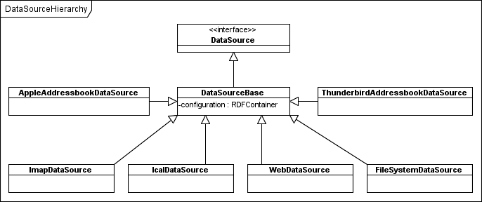

One of the central concepts of Aperture is the notion of a DataSource. A DataSource contains all information necessary to locate the individual information resources in a physical source. For example, a FileSystemDataSource holds a root directory, a set of patterns that describe what files to include or exclude, a maximum depth, etc., thereby effectively describing a set of files.
One of the main purposes of a DataSource is to hold all data needed by a Crawler to crawl the physical source and retrieve all the individual resources in it.
The current data source hierarchy looks as follows:
The specific DataSource implementations available at the moment do nothing more than define a URI used to identify the data source type in a RDF model. That's why you don't need to explicitly add the RDF.type - source:FileSystemDataSource property.
All configuration data is modeled as an RDF model and stored in a RDFContainer. Whenever possible, properties from the SourceVocabulary are used to model configuration settings, Although developers of new DataSource types are free to use their own properties when necessary. The configuration RDFContainer is the intended place to store the configuration data. That's why the classes don't contain any additional fields. Such additional fields should be added only if there is no possibility to represent the needed information in RDF. Once we start to use a DataSource whose configuration cannot entirely be expressed in an RDF model, we can use its DataSource implementation class to hold the remaining configuration.
A utility class, ConfigurationUtil, is provided that contains method for editing and retrieving configuration data from the RDFContainer. Note that it only knows how to deal with configuration properties defined in the SourceVocabulary interface.
It is worth mentioning, that DataSource classes only DESCRIBE a data source. They don't contain any resources that would enable direct access to the source (such as InputStreams, or Readers, whatever...). (At least it was not the intention of the designers). Any such resource may be encapsulated in a DataObject returned by an Accessor.
The following code demonstrates how to create and configure a FileSystemDataSource:
// determine the root folder of the source
File rootFolder = new File("D:\\path\\to\\the\\root\\folder");
// determine a URI to identify the DataSource
URI id = new URIImpl("urn:test:testsource");
// create the DataSource configuration
Model model = RDF2Go.getModelFactory().createModel();
RDFContainer configuration = new RDFContainerImpl(model,id);
ConfigurationUtil.setRootFolder(rootFolder.getAbsolutePath(), configuration);
// create the DataSource instance
FileSystemDataSource source = new FileSystemDataSource();
source.setConfiguration(configuration)